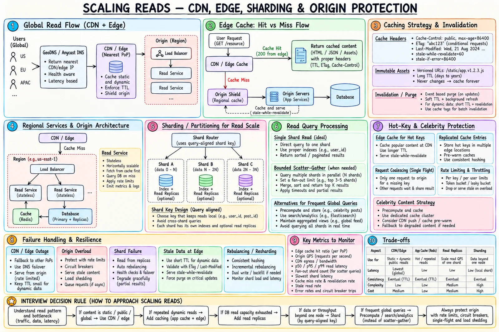

Topic · Scaling Reads
CDN, Sharding, and Origin Protection
Serve cacheable bytes from the edge, shard only at proven single-node limits, and protect the source of truth with limits and per-tier metrics.


Quick Revision
- Static, versioned assets are the safest CDN fit; dynamic needs keys, auth, TTL, purge.
- Origin shield collapses edge misses before they hit the app.
- Shard for storage/throughput limits, not just "lots of reads".
- Single-shard reads are ideal; frequent global queries → precomputed view/search.
- Measure per tier, per node, per key - averages hide hotspots.
CDN and edge caching
- Safe - images, video segments, JS, CSS, fonts, versioned assets, public downloads.
- Advanced - public HTML, public API responses, edge redirects/compute.
- Dynamic needs - full cache key (path, canonical query, locale, device, headers), auth/privacy, TTL budget, purge, origin fallback, analytics semantics.
Cache-Control: public, max-age=60, s-maxage=300, stale-while-revalidate=60 ETag: "profile-123-v42" Vary: Accept-Encoding, Accept-Language /app.9f3a2c1.js Cache-Control: public, max-age=31536000, immutable
Origin shield: a regional cache between PoPs and origin so many edge misses become one.
Sharding for reads
Shard when one node can't hold the data, one replica group can't serve the throughput, tenants need isolation/locality, or headroom is gone. Replicas and caches usually scale reads more cheaply.
user_id → user-owned profile/feed product_id → point lookups region + user_id → locality + spread tenant_id + hash(entity_id) → isolate tenants, split big ones
Good key: high cardinality, even data and requests, query + transaction locality, stable.
single shard: extract key → route once → local index/replica → return scatter-gather: query N shards → merge → sort/rank → top K
Scatter-gather latency tracks the slowest shard; failures, pagination, network, and merge CPU grow with fan-out. Use per-shard cursors + a merge cursor if unavoidable.
Origin protection and observability
- Protect - per-origin concurrency limits, rate limits, admission control, breakers, timeout budgets, retry budgets with backoff + jitter, shed non-critical reads, partial results where allowed, stale-if-error for safe data, gradual warm-up, chaos tests.
- Latency - end-to-end p50/p95/p99 and per tier (edge, app, cache, DB).
- DB - CPU, memory, I/O, connections, lock waits, rows scanned vs returned, per-replica lag.
- Cache - hit and byte hit ratio, miss latency, evictions, top-N key share.
- CDN - hit ratio per PoP, origin egress, purge failures.
- Shards - QPS, storage, latency, fan-out, skew; projection lag; breaker trips, rejects, stale-served rate.
Trade-offs
| Choice | Benefit | Cost |
|---|---|---|
| CDN/edge | Global latency, origin offload | Cost, privacy, variation, purge |
| Hash sharding | Even point lookups | No natural ranges; resharding |
| Range sharding | Efficient range scans | Hot latest range |
| Scatter-gather | Global query without new model | Tail latency, partial failures |
| Precomputed global view | Fast global query | Eventual consistency, extra pipeline |
Failure modes
- Wrong locale/device variant - canonical key, explicit
Vary. - Expired/deleted content served - versioning, short dynamic TTL, purge monitoring.
- Origin overload in CDN outage - multi-CDN/origin fallback, rate limits, autoscaling.
- Key balances rows, not QPS - traffic-aware metrics, dedicated placement, cache.
- Global query hits every shard - search/precomputed view or bounded fan-out.
- One slow shard dominates - timeouts, careful hedging, partial results, isolate shard.
- Cluster averages hide imbalance - per-node and per-key metrics.
- Stale data where correctness matters - per-field freshness matrix; validate at primary.
Interview practice
Answer aloud, then reveal.
When should you shard for reads?
Only when one optimized node + replicas can't meet storage or throughput, or isolation demands it - with a query-aligned key.
Scale a global top-K query?
Per-shard top candidates merged into a global read model/search/analytics store; cache with a freshness SLA. Don't scan all shards per request.
Paginate across shards?
Prefer shard-local queries; else per-shard cursors + global merge cursor, stable ordering, bounded fan-out, dedupe/gap handling. A global index is simpler.
Can a CDN cache API responses?
Yes, for public responses with a complete key, correct Cache-Control/Vary, TTL within freshness budget, and a purge path.